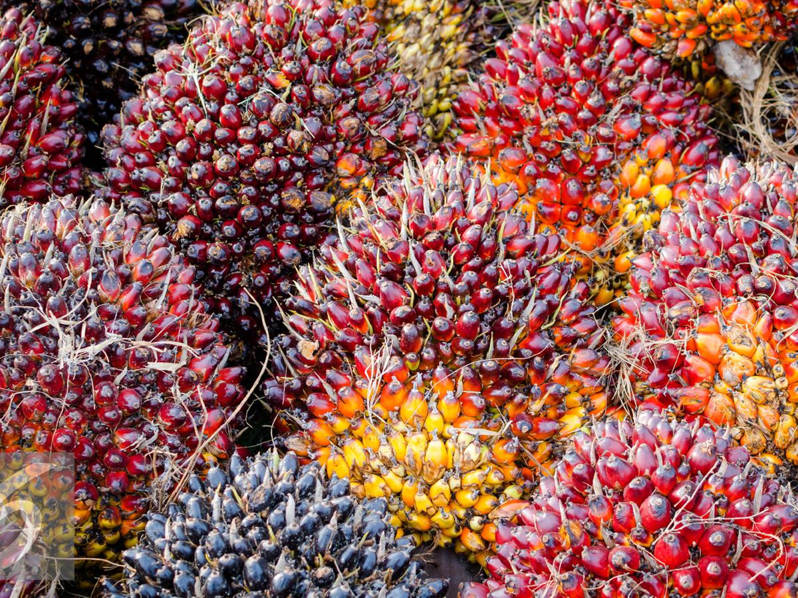
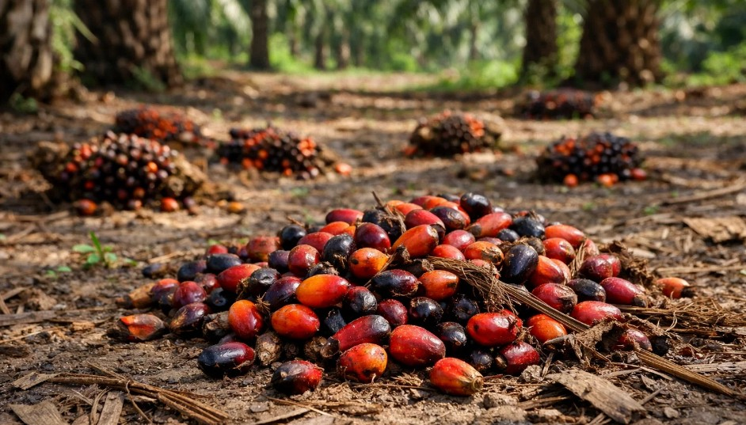
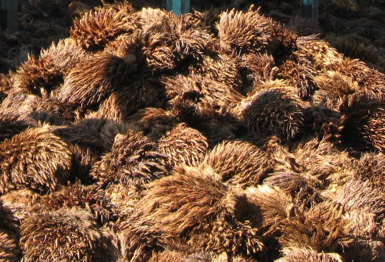
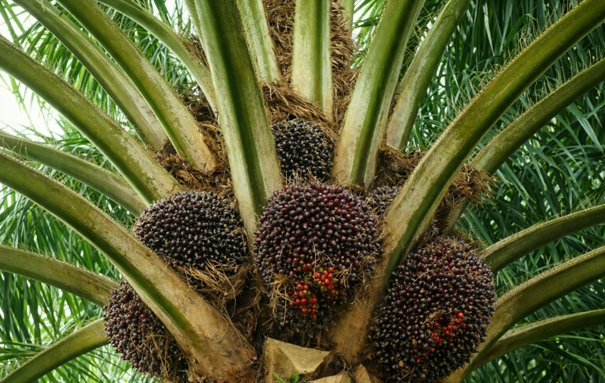

Smart Monitoring
Monitoring Produksi dan Kualitas Kelapa Sawit
Produksi Harian
Update Hari Ini
Kualitas Buah
Kualitas Baik
Total Panen
Tahun 2026 (Proyeksi)
Statistik Panen
Ringkasan Statistik
Ciri-Ciri Buah Sawit Berkualitas
Warna Buah
Buah sawit yang berkualitas ditandai dengan warna merah jingga cerah hingga kemerahan mengkilap pada sebagian besar permukaan buah. Warna tersebut menunjukkan bahwa buah telah mencapai tingkat kematangan optimal sehingga memiliki kandungan minyak yang tinggi dan siap dipanen.

Brondolan
Keberadaan 5–10 brondolan yang terlepas secara alami di sekitar tandan merupakan tanda utama bahwa buah telah matang. Kondisi ini menunjukkan waktu panen yang tepat sehingga kualitas minyak yang dihasilkan dapat lebih maksimal.

Berat Tandan
Tandan yang berkualitas memiliki susunan buah yang padat, ukuran relatif seragam, dan bobot yang sesuai standar produktivitas tanaman. Berat tandan yang optimal menandakan perkembangan buah yang baik serta potensi hasil panen yang lebih tinggi.

Kondisi Buah
Buah sawit yang sehat tidak menunjukkan gejala pembusukan, kerusakan fisik, maupun serangan hama dan penyakit. Permukaan buah terlihat utuh, bersih, dan segar sehingga dapat menghasilkan minyak sawit dengan kualitas yang lebih baik saat proses pengolahan.
